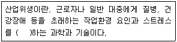
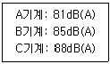
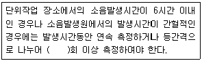
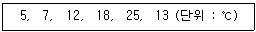
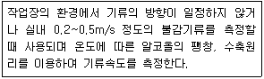

산업위생관리기사 (2020-09-26 기출문제)
1과목: 산업위생학개론
1. 미국산업위생학술원(AAIH)에서 채택한 산업위생전문가의 윤리강령 중 기업주와 고객에 대한 책임과 관계된 윤리강령은?
- 기업체의 기밀은 누설하지 않는다.
- 전문적 판단이 타협의 의하여 좌우될 수 있는 상황에는 개입하지 않는다.
- 근로자, 사회 및 전문 직종의 이익을 위해 과학적 지식을 공개하고 발표한다.
- 결과와 결론을 뒷받침할 수 있도록 기록을 유지하고 산업위생사업을 전문가답게 운영, 관리한다.
(정답률: 59%)

2. 산업안전보건법령상 보건관리자의 자격에 해당되지 않는 것은?
- 「의료법」에 따른 의사
- 「의료법」에 따른 간호사
- 「국가기술자격법」에 따른 산업위생관리 산업기사이상의 자격을 취득한 사람
- 「국가기술자격법」에 따른 대기환경 기사이상의 자격을 취득한 사람
(정답률: 79%)
3. 근육과 뼈를 연결하는 섬유조직을 무엇이라 하는가?
- 건(tendon)
- 관절(joint)
- 뉴런(neuron)
- 인대(ligament)
(정답률: 70%)
4. 다음 중 18세기 영국에서 최초로 보고하였으며, 어린이 굴뚝청소부에게 많이 발생하였고, 원인물질이 검댕(soot) 이라고 규명된 직업성 암은?
- 폐암
- 후두암
- 음낭암
- 피부암
(정답률: 85%)
5. 다음은 직업성 질환과 그 원인이 되는 직업이 가장 적합하게 연결된 것은?
- 평편족 - VDT 작업
- 진폐증 - 고압, 저압작업
- 중추신경 장해 - 광산작업
- 목위팔(경견완)증후군 - 타이핑작업
(정답률: 84%)
6. 산업안전보건법령상 제조 등이 금지되는 유해물질이 아닌 것은?
- 석면
- 염화비닐
- β - 나프틸아민
- 4 - 니트로티페닐
(정답률: 58%)
7. 재해발생의 주요 원인에서 불완전한 행동에 해당하는 것은?
- 보호구 미착용
- 방호장치 미설치
- 시끄러운 주변 환경
- 경고 및 위험표지 미설치
(정답률: 76%)
8. 효과적인 교대근무제의 운용방법에 대한 내용으로 옳은 것은?
- 야근근무 종료 후 휴식은 24시간 전후로 한다.
- 야근은 가면(假眠)을 하더라도 10시간 이내가 좋다.
- 신체적 적응을 위하여 야근근무의 연속일수는 대략 1주일로 한다.
- 누적 피로를 회복하기 위해서는 정교대 방식보다는 역교대 방식이 좋다.
(정답률: 73%)
9. 산업안전보건법령상 입자상 물질의 농도 평가에서 2회 이상 측정한 단시간 노출농도값이 단시간노출기준과 시간가중평균기준값 사이일 때 노출기준 초과로 평가해야 하는 경우가 아닌 것은?
- 1일 4회를 초과하는 경우
- 15분 이상 연속 노출되는 경우
- 노출과 노출 사이의 간격이 1시간 이내인 경우
- 단위작업장소의 넓이가 80평방미터 이상인 경우
(정답률: 79%)
10. 다음 산업위생의 정의 중 ( )안에 들어갈 내용으로 볼 수 없는 것은?

- 보상
- 예측
- 평가
- 관리
(정답률: 68%)
11. 산업안전보건법령상 영상표시단말기(VDT) 취급 근로자의 작업자세로 옳지 않은 것은?
- 팔꿈치의 내각은 90°이상이 되도록 한다.
- 근로자의 발바닥 전면이 바닥면에 닿는 자세를 기본으로 한다.
- 무릎의 내각(Knee Angle)은 90°전후가 되도록 한다.
- 근로자의 시선은 수평선상으로부터 10~15°위로 가도록 한다.
(정답률: 69%)
12. 직업성 질환에 관한 설명으로 옳지 않은 것은?
- 직업성 질환과 일반 질환은 경계가 뚜렷하다.
- 직업성 질환은 재해성 질환과 직업병으로 나눌 수 있다.
- 직업성 질환이란 어떤 작업에 종사함으로써 발생하는 업무상 질병을 의미한다.
- 직업병은 저농도 또는 저수준의 상태로 장시간 걸쳐 반복노출로 생긴 질병을 의미한다.
(정답률: 80%)
13. 사고예방대책 기본 원리 5단계를 올바르게 나열한 것은?
- 사실의 발견 → 조직 → 분석ㆍ평가 → 시정방법의 선정 → 시정책의 적용
- 사실의 발견 → 조직 → 시정방법의 선정 → 시정책의 적용 → 분석ㆍ평가
- 조직 → 사실의 발견 → 분석ㆍ평가 → 시정방법의 선정 → 시정책의 적용
- 조직 → 분석ㆍ평가 → 사실의 발견→ 시정방법의 선정 → 시정책의 적용
(정답률: 80%)
14. 유해물질의 생물학적 노출지수 평가를 위한 소변 시료채취방법 중 채취시간에 제한없이 채취할 수 있는 유해물질은 무엇인가? (단, ACGIH 권장기준이다.)
- 벤젠
- 카드뮴
- 일산화탄소
- 트리클로로에틸렌
(정답률: 59%)
15. A유해물질의 노출기준은 100ppm이다. 잔업으로 인하여 작업시간이 8시간에서 10시간으로 늘었다면 이 기준치는 몇 ppm으로 보정해 주어야 하는가? (단, Brief와 Scala의 보정방법을 적용하며 1일 노출시간을 기준으로 한다.)
- 60
- 70
- 80
- 90
(정답률: 63%)
16. 젊은 근로자의 약한 손(오른손잡이일 경우 왼손)의 힘이 평균 45kp일 경우 이 근로자가 무게 10kg인 상자를 두 손으로 들어 올릴 경우의 작업강도(%MS)는 약 얼마인가?
- 1.1
- 8.5
- 11.1
- 21.1
(정답률: 72%)
17. 다음 최대 작업역(maximum area)에 대한 설명으로 옳은 것은?
- 작업자가 작업할 때 팔과 다리를 모두 이용하여 닿는 영역
- 작업자가 작업을 할 때 아래팔을 뻗어 파악할 수 있는 영역
- 작업자가 작업할 때 상체를 기울여 손이 닿는 영역
- 작업자가 작업할 때 윗팔과 아래팔을 곧게 펴서 파악할 수 있는 영역
(정답률: 74%)
18. 산업 스트레스의 반응에 따른 심리적 결과에 해당되지 않는 것은?
- 가정문제
- 수면방해
- 돌발적사고
- 성(性)적 역기능
(정답률: 76%)
19. 전신피로의 원인으로 볼 수 없는 것은?
- 산소공급의 부족
- 작업강도의 증가
- 혈중포도당 농도의 저하
- 근육내 글리코겐 양의 증가
(정답률: 79%)
20. 공기 중의 혼합물로서 아세톤 400ppm(TLV=750ppm), 메틸에틸케톤 100ppm(TLV=200ppm)이 서로 상가작용을 할 때 이 혼합물의 노출지수(EI)는 약 얼마인가?
- 0.82
- 1.03
- 1.10
- 1.45
(정답률: 75%)
2과목: 작업위생측정 및 평가
21. 공기 중에 카본 테트라클로라이드((TLV=10ppm) 8ppm, 1,2-디클로로에탄(TLV=50ppm) 40ppm, 1,2-디브로모에탄(TLV=20ppm) 10ppm으로 오염되었을 때, 이 작업장 환경의 허용기준 농도(ppm)는? (단, 상가작용을 기준으로 한다.)
- 24.5
- 27.6
- 29.6
- 58.0
(정답률: 58%)
22. 시간당 200~300kcal의 열량이 소요되는 중등작업 조건에서 WBGT 측정치가 31.1℃일 때 고열작업 노출기준의 작업휴식조건으로 가장 적절한 것은?
- 계속 작업
- 매시간 25% 작업, 75% 휴식
- 매시간 50% 작업, 50% 휴식
- 매시간 75% 작업, 25% 휴식
(정답률: 52%)
23. 다음 중 직독식 기구로만 나열된 것은?
- AAS, ICP, 가스모니터
- AAS, 휴대용 GC, GC
- 휴대용 GC, ICP, 가스검지관
- 가스모니터, 가스검지관, 휴대용 GC
(정답률: 65%)
24. 입자상 물질을 채취하는데 사용하는 여과지 중 막여과지(membrane filter)가 아닌 것은?
- MCE 여과지
- PVC 여과지
- 유리섬유 여과지
- PTFE 여과지
(정답률: 65%)
25. 연속적으로 일정한 농도를 유지하면서 만드는 방법 중 Dynamic Method에 관한 설명으로 틀린 것은?
- 농도변화를 줄 수 있다.
- 대개 운반용으로 제작된다.
- 만들기가 복잡하고, 가격이 고가이다.
- 소량의 누출이나 벽면에 의한 손실은 무시할 수 있다.
(정답률: 65%)
26. 다음 중 활성탄관과 비교한 실리카겔관의 장점과 가장 거리가 먼 것은?
- 수분을 잘 흡수하여 습도에 대한 민감도가 높다.
- 매우 유독한 이황화탄소를 탈착용매로 사용하지 않는다.
- 극성물질을 채취한 경우 물, 에탄올 등 다양한 용매로 쉽게 탈착된다.
- 추출액이 화학분석이나 기기분석에 방해물질로 작용하는 경우가 많지 않다.
(정답률: 53%)
27. 호흡성 먼지에 관한 내용으로 옳은 것은? (단, ACGIH를 기준으로 한다.)
- 평균 입경은 1㎛이다.
- 평균 입경은 4㎛이다.
- 평균 입경은 10㎛이다.
- 평균 입경은 50㎛이다.
(정답률: 69%)
28. 셀룰로오스 에스테르 막여과지에 대한 설명으로 틀린 것은?
- 산에 쉽게 용해된다.
- 유해물질이 표면에 주로 침착되어 현미경 분석에 유리하다.
- 흡습성이 적어 중량분석에 주로 적용된다.
- 중금석 시료채취에 유리하다.
(정답률: 62%)
29. 작업장의 유해인자에 대한 위해도 평가에 영향을 미치는 것과 가장 거리가 먼 것은?
- 유해인자의 위해성
- 휴식시간의 배분 정도
- 유해인자에 노출되는 근로자수
- 노출되는 시간 및 공간적인 특성과 빈도
(정답률: 59%)
30. 직경이 5㎛, 비중이 1.8인 원형 입자의 침강속도(cm/min)는? (단, 공기의 밀도는 0.0012g/cm3, 공기의 점도는 1.807×10-4poise이다.)
- 6.1
- 7.1
- 8.1
- 9.1
(정답률: 39%)
31. 어느 작업장의 소음 측정 결과가 다음과 같을 때, 총 음압레벨(dB(A))은? (단, A, B, C 기계는 동시에 작동된다.)

- 84.7
- 86.5
- 88.0
- 90.3
(정답률: 64%)
32. 작업환경측정방법 중 소음측정시간 및 횟수에 관한 내용 중 ( )안에 들어갈 내용으로 옳은 것은? (단, 고용노동부 고시를 기준으로 한다.)

- 2
- 3
- 4
- 6
(정답률: 72%)
33. 레이저광의 폭로량을 평가하는 사항에 해당하지 않는 항목은?
- 각막 표면에서의 조사량(J/cm2) 또는 폭로량을 측정한다.
- 조사량의 서한도는 1mm 구경에 대한 평균치이다.
- 레이저광과 같은 직사광파 형광등 또는 백열등과 같은 확산광은 구별하여 사용해야 한다.
- 레이저광에 대한 눈의 허용량은 폭로 시간에 따라 수정되어야 한다.
(정답률: 54%)
34. 분석 기기에서 바탕선량(background)과 구별하여 분석될 수 있는 최소의 양은?
- 검출한계
- 정량한계
- 정성한계
- 정도한계
(정답률: 57%)
35. 작업장의 온도 측정결과가 다음과 같을 때, 측정결과의 기하평균은?

- 11.6℃
- 12.4℃
- 13.3℃
- 15.7℃
(정답률: 57%)
36. 금속제품을 탈지 세정하는 공정에서 사용하는 유기용제인 트리클로로에틸렌이 근로자에게 노출되는 농도를 측정하고자 한다. 과거의 노출농도를 조사해 본 결과, 평균 50ppm이었을 때, 활성탄관(100mg/50mg)을 이용하여 0.4L/min으로 채취하였다면 채취해야 할 시간(min)은? (단, 트키를로로에틸렌의 분자량은 131.39이고 기체크로마토그래피의 정량한계는 시료당 0.5mg, 1기압, 25℃기준으로 기타 조건은 고려하지 않는다.)
- 2.4
- 3.2
- 4.7
- 5.3
(정답률: 37%)
37. 5M 황산을 이용하여 0.004M 황산용액 3L를 만들기 위해 필요한 5M 황산의 부피(mL)는?
- 5.6
- 4.8
- 3.1
- 2.4
(정답률: 37%)
38. 작업환경공기 중의 물질A(TLV 50ppm)가 55ppm이고, 물질B(TLV 50ppm)가 47ppm이며, 물질C(TLV 50ppm)가 52ppm이었다면, 공기의 노출농도 초과도는? (단, 상가작용을 기준으로 한다.)
- 3.62
- 3.08
- 2.73
- 2.33
(정답률: 66%)
39. 다음 중 정밀도를 나타내는 통계적 방법과 가장 거리가 먼 것은?
- 오차
- 산포도
- 표준편차
- 변이계수
(정답률: 44%)
40. 빛의 파장의 단위로 사용되는 Å(Ångström)을 국제표준 단위계(SI)로 나타낸 것은?
- 10-6m
- 10-8m
- 10-10m
- 10-12m
(정답률: 50%)
3과목: 작업환경관리대책
41. 두 분지관이 동일 합류점에서 만나 합류관을 이루도록 설계되어 있다. 한쪽 분지관의 송풍량은 200m3/min, 합류점에서의 이 관의 정압은 -34mmH2O이며, 다른쪽 분지관의 송풍량은 160m3/min, 합류점에서의 이 관의 정압은 -30mmH2O이다. 합류점에서 유량의 균형을 유지하기 위해서는 압력손실이 더 적은 관을 통해 흐르는 송풍량(m3/min)을 얼마로 해야 하는가?
- 165
- 170
- 175
- 180
(정답률: 31%)
42. 페인트 도장이나 농약 살포와 같이 공기 중에 가스 및 증기상 물질과 분진이 동시에 존재하는 경우 호흡 보호구에 이용되는 가장 적절한 공기 정화기는?
- 필터
- 만능형 캐니스터
- 요오드를 입힌 활성탄
- 금속산화물을 도포한 활성탄
(정답률: 63%)
43. 전체환기시설을 설치하기 위한 기본원칙으로 가장 거리가 먼 것은?
- 오염물질 사용량을 조사하여 필요 환기량을 계산한다.
- 공기배출구와 근로자의 작업위치 사이에 오염원이 위치해야 한다.
- 오염물질 배출구는 가능한 한 오염원으로부터 가까운 곳에 설치하여 점환기 효과를 얻는다.
- 오염원 주위에 다른 작업공정이 있으면 공기 공급량을 배출량보다 크게 하여 양압을 형성시킨다.
(정답률: 60%)
44. 송풍관(duct) 내부에서 유속이 가장 빠른 곳은? (단, d는 송풍관의 직경을 의미한다.)
- 위에서 1/10ㆍd 지점
- 위에서 1/5ㆍd 지점
- 위에서 1/3ㆍd 지점
- 위에서 1/2ㆍd 지점
(정답률: 62%)
45. 작업장 용적이 10m×3m×40m이고 필요 환기량이 120m3/min일 때 시간당 공기교환 횟수는?
- 360회
- 60회
- 6회
- 0.6회
(정답률: 60%)
46. 국소배기시설이 희석환기시설보다 오염물질을 제거하는데 효과적이므로 선호도가 높다. 이에 대한 이유가 아닌 것은?
- 설계가 잘된 경우 오염물질의 제거가 거의 완벽하다.
- 오염물질의 발생 즉시 배기시키므로 필요 공기량이 적다.
- 오염 발생원의 이동성이 큰 경우에도 적용 가능하다.
- 오염물질 독성이 클 때도 효과적 제거가 가능하다.
(정답률: 58%)
47. 산업안전보건법령상 관리대상 유해물질 관련 국소배기장치 후드의 제어풍속(m/s)의 기준으로 옳은 것은?
- 가스상태(포위식 포위형): 0.4
- 가스상태(외부식 상방흡인형): 0.5
- 입자상태(포위식 포위형): 1.0
- 입자상태(외부식 상방흡인형): 1.5
(정답률: 35%)
48. 총흡음량이 900sabins인 소음발생작업장에 흡음재를 천장에 설치하여 2000sabins 더 추가하였다. 이 작업장에서 기대되는 소음 감소치(NR; db(A))는?
- 약 3
- 약 5
- 약 7
- 약 9
(정답률: 52%)
49. 외부식 후드(포집형 후드)의 단점이 아닌 것은?
- 포위식 후드보다 일반적으로 필요송풍량이 많다.
- 외부 난기류의 영향을 받아서 흡인효과가 떨어진다.
- 근로자가 발생원과 환기시설 사이에서 작업하게 되는 경우가 많다.
- 기류속도가 후드 주변에서 매우 빠르므로 쉽게 흡인되는 물질의 손실이 크다.
(정답률: 41%)
50. 송풍기의 효율이 큰 순서대로 나열된 것은?
- 평판송풍기 ＞ 다익송풍기 ＞ 터보송풍기
- 다익송풍기 ＞ 평판송풍기 ＞ 터보송풍기
- 터보송풍기 ＞ 다익송풍기 ＞ 평판송풍기
- 터보송풍기 ＞ 평판송풍기 ＞ 다익송풍기
(정답률: 62%)
51. 송풍기 입구 전압이 280mmH2O이고 송풍기 출구 정압이 100mmH2O이다. 송풍기 출구 속도압이 200mmH2O일 때, 전압(mmH2O)은?
- 20
- 40
- 80
- 180
(정답률: 35%)
52. 플레넘형 환기시설의 장점이 아닌 것은?
- 연마분진과 같이 끈적거리거나 보풀거리는 분진의 처리가 용이하다.
- 주관의 어느 위치에서도 분지관을 추가하거나 제거할 수 있다.
- 주관은 입경이 큰 분진을 제거할 수 있는 침강식의 역할이 가능하다.
- 분지관으로부터 송풍기까지 낮은 압력손실을 제공하여 운전동력을 최소화할 수 있다.
(정답률: 44%)
53. 레시버식 캐노피형 후드를 설치할 때, 적절한 H/E는? (단, E는 배출원의 크기이고, H는 후드면과 배출원간의 거리를 의미한다.)
- 0.7 이하
- 0.8 이하
- 0.9 이하
- 1.0 이하
(정답률: 44%)
54. 귀덮개의 차음성능기준상 중심주파수가 1000Hz인 음원의 차음치(dB)는?
- 10 이상
- 20 이상
- 25 이상
- 35 이상
(정답률: 43%)
55. 다음 중 작업장에서 거리, 시간, 공정, 작업자 전체를 대상으로 실시하는 대책은?
- 대체
- 격리
- 환기
- 개인보호구
(정답률: 46%)
56. 작업대 위에서 용접할 때 흄(fume)을 포집제거하기 위해 작업면에 고정된 플랜지가 붙은 외부식 사각형 후드를 설치하였다면 소요 송풍량(m3/min)은? (단, 개구면에서 작업지점까지의 거리는 0.25m, 제어속도는 0.5m/s, 후드 개구면적은 0.5m2이다.)
- 0.281
- 8.430
- 16.875
- 26.425
(정답률: 48%)
57. 산업위생보호구의 점검, 보수 및 관리방법에 관한 설명 중 틀린 것은?
- 보호구의 수는 사용하여야 할 근로자의 수 이상으로 준비한다.
- 호흡용보호구는 사용 전, 사용 후 여재의 성능을 점검하여 성능이 저하된 것은 폐기, 보수, 교환 등의 조치를 취한다.
- 보호구의 청결 유지에 노력하고, 보관할 때에는 건조한 장소와 분진이나 가스 등에 영향을 받지 않는 일정한 장소에 보관한다.
- 호흡용보호구나 귀마개 등은 특정 유해물질 취급이나 소음에 노출될 때 사용하는 것으로서 그 목적에 따라 반드시 공용으로 사용해야 한다.
(정답률: 78%)
58. 세정제진장치의 특징으로 틀린 것은?
- 배출수의 재가열이 필요없다.
- 포집효율을 변화시킬 수 있다.
- 유출수가 수질오염을 야기할 수 있다.
- 가연성, 폭발성 분진을 처리할 수 있다.
(정답률: 39%)
59. 다음은 직관의 압력손실에 관한 설명으로 잘못된 것은?
- 직관의 마찰계수에 비례한다.
- 직관의 길이에 비례한다.
- 직관의 직경에 비례한다.
- 속도(관내유속)의 제곱에 비례한다.
(정답률: 52%)
60. 덕트의 설치 원칙과 가장 거리가 먼 것은?
- 가능한 한 후드와 먼 곳에 설치한다.
- 덕트는 강한 한 짧게 배치하도록 한다.
- 밴드의 수는 가능한 한 적게 하도록 한다.
- 공기가 아래로 흐르도록 하향구배를 만든다.
(정답률: 67%)
4과목: 물리적유해인자관리
61. 다음에서 설명하고 있는 측정기구는?

- 풍차풍속계
- 카타(Kata)온도계
- 가열온도풍속계
- 습구흡구온도계(WBGT)
(정답률: 70%)
62. 진동에 의한 작업자의 건강장해를 예방하기 위한 대책으로 옳지 않은 것은?
- 공구의 손잡이를 세게 잡지 않는다.
- 가능한 한 무거운 공구를 사용하여 진동을 최소화한다.
- 진동공구를 사용하는 작업시간을 단축시킨다.
- 진동공구와 손 사이 공간에 방진재료를 채워 놓는다.
(정답률: 73%)
63. 마이크로파가 인체에 미치는 영향으로 옳지 않은 것은?
- 1000~10000Hz의 마이크로파는 백내장을 일으킨다.
- 두통, 피로감, 기억력 감퇴 등의 증상을 유발시킨다.
- 마이크로파의 열작용에 많은 영향을 받는 기관은 생식기와 눈이다.
- 중추신경계는 1400~2800Hz 마이크로파 범위에서 가장 영향을 많이 받는다.
(정답률: 46%)
64. 감압에 따르는 조직내 질소기포 형성량에 영향을 주는 요인인 조직에 용해된 가스량을 결정하는 인자로 가장 적절한 것은?
- 감압 속도
- 혈류의 변화정도
- 노출정도와 시간 및 체내 지방량
- 폐내의 이산화탄소 농도
(정답률: 36%)
65. 다음 중 전리방사선에 대한 감수성이 가장 낮은 인체조직은?
- 골수
- 생식선
- 신경조직
- 임파조직
(정답률: 53%)
66. 비전리 방사선 중 유도방출에 의한 광선을 증폭시킴으로서 얻는 복사선으로, 쉽게 산란하지 않으며 강력하고 예리한 지향성을 지닌 것은?
- 적외선
- 마이크로파
- 가시광선
- 레이저광선
(정답률: 66%)
67. 한랭환경에서 발생할 수 있는 건강장해에 관한 설명으로 옳지 않은 것은?
- 혈관의 이상은 저온 노출로 유발되거나 악화된다.
- 참호족과 침수족은 지속적인 국소의 산소결핍 때문이며, 모세혈관 벽이 손상되는 것이다.
- 전신체온강화는 단시간의 한랭폭로에 따른 일시적 체온상실에 따라 발생하는 중증장해에 속한다.
- 동상에 대한 저항은 개인에 따라 차이가 있으나 중증환자의 경우 근육 및 신경조직 등 심부조직이 손상된다.
(정답률: 43%)
68. 일반소음의 차음효과는 벽체의 단위표적면에 대하여 벽체의 무게를 2배로 할 때 또는 주파수가 2배로 증가될 때 차음은 몇 dB 증가 하는가?
- 2 dB
- 6 dB
- 10 dB
- 15 dB
(정답률: 69%)
69. 3N/m2의 음압은 약 몇 dB의 음압수준인가?
- 95
- 104
- 110
- 1115
(정답률: 54%)
70. 손가락의 말초혈관운동의 장애로 인한 혈액순환장애로 손가락의 감각이 마비되고, 창백해지며, 추운 환경에서 더욱 심해지는 레이노(Raynaud) 현상의 주요 원인으로 옳은 것은?
- 진동
- 소음
- 조명
- 기압
(정답률: 75%)
71. 고열장해에 대한 내용으로 옳지 않은 것은?
- 열경련(heat cramps) : 고온 환경에서 고된 육체적인 작업을 하면서 땀을 많이 흘릴 때 많은 물을 마시지만 신체의 염분 손실을 충당하지 못할 경우 발생한다.
- 열허탈(heat collapse) : 고열작업에 순화되지 못해 말초혈관이 확장되고, 신체 말단에 혈액이 과다하게 저류되어 뇌의 산소부족이 나타난다.
- 열소모(heat exhaustion) : 과다발한으로 수분/염분손실에 의하여 나타나며, 두통, 구역감, 현기증 등이 나타나지만 체온은 정상이거나 조금 높아진다.
- 열사병(heat stroke) : 작업환경에서 가장 흔히 발생하는 피부장해로서 땀에 젖은 피부 각질층이 떨어져 땀구멍을 막아 염증성 반응을 일으켜 붉은 구진 형태로 나타난다.
(정답률: 67%)
72. 이상기압의 대책에 관한 내용으로 옳지 않은 것은?
- 고압실 내의 작업에서는 탄산가스의 분압이 증가하지 않도록 신선한 공기를 송기한다.
- 고압환경에서 작업하는 근로자에게는 질소의 양을 증가시킨 공기를 호흡시킨다.
- 귀 등의 장해를 예방하기 위하여 압력을 가하는 속도를 매 분당 0.8kg/cm2 이하가 되도록 한다.
- 감압병의 증상이 발생하였을 때에는 환자를 바로 원래의 고압환경 상태로 복귀시키거나, 인공고압실에서 천천히 감압한다.
(정답률: 63%)
73. 산소농도가 6% 이하인 공기 중의 산소분압으로 옳은 것은? (단, 표준상태이며, 부피기준이다.)
- 45mmHg 이하
- 55mmHg 이하
- 65mmHg 이하
- 75mmHg 이하
(정답률: 57%)
74. 1 fc(foot candle)은 약 몇 럭스(lux)인가?
- 3.9
- 8.9
- 10.8
- 13.4
(정답률: 46%)
75. 작업장 내의 직접조명에 관한 설명으로 옳은 것은?
- 장시간 작업에도 눈이 부시지 않는다.
- 조명기구가 간단하고, 조명기구의 효율이 좋다.
- 벽이나 천정의 색조에 좌우되는 경향이 있다.
- 작업장 내의 균일한 조도의 확보가 가능하다.
(정답률: 53%)
76. 고압 환경의 생체작용과 가장 거리가 먼 것은?
- 고공성 폐수종
- 이산화탄소(CO2) 중독
- 귀, 부비강, 치아의 압통
- 손가락과 발가락의 작열통과 같은 산소 중독
(정답률: 59%)
77. 음압이 20N/m2일 경우 음압수준(sound pressure level)은 얼마인가?
- 100dB
- 110dB
- 120dB
- 130dB
(정답률: 53%)
78. 25℃일 때, 공기 중에서 1000Hz인 음의 파장은 약 몇 m인가? (단, 0℃, 1기압에서의 음속은 331.5m/s이다.)
- 0.035
- 0.35
- 3.5
- 35
(정답률: 47%)
79. 난청에 관한 설명으로 옳지 않은 것은?
- 일시적 난청은 청력의 일시적인 피로현상이다.
- 영구적 난청은 노인성 난청과 같은 현상이다.
- 일반적으로 초기청력 손실을 C5-dip 현상이라 한다.
- 소음성 난청은 내이의 세포변성을 원인으로 볼 수 있다.
(정답률: 59%)
80. 다음 전리방사선 중 투과력이 가장 약한 것은?
- 중성자
- γ선
- β선
- α선
(정답률: 65%)
5과목: 산업독성학
81. 물질 A의 독성에 관한 인체실험 결과, 안전흡수량이 체중 kg당 0.1mg이었다. 체중이 50kg인 근로자가 1일 8시간 작업할 경우 이 물질의 체내 흡수를 안전 흡수량 이하로 유지하려면 공기 중 농도를 몇 mg/m3 이하로 하여야 하는가? (단, 작업시 폐환기율은 1.25m3/h, 체내 잔류율은 1.0으로 한다.)
- 0.5
- 1.0
- 1.5
- 2.0
(정답률: 50%)
82. 소변을 이용한 생물학적 모니터링의 특징으로 옳지 않은 것은?
- 비파괴적 시료채취 방법이다.
- 많은 양의 시료확보가 가능하다.
- EDTA와 같은 항응고제를 첨가한다.
- 크레아티닌 농도 및 비중으로 보정이 필요하다.
(정답률: 64%)
83. 톨루엔(Toluene)의 노출에 대한 생물학적 모니터링 지표 중 소변에서 확인 가능한 대사산물은?
- thiocyante
- glucuronate
- hippuric acid
- organic sulfate
(정답률: 57%)
84. 생물학적 모니터링 방법 중 생물학적 결정인자로 보기 어려운 것은?
- 체액의 화학물질 또는 그 대사산물
- 표적조직에 작용하는 활성 화학물질의 양
- 건강상의 영향을 초래하지 않은 부위나 조직
- 처음으로 접촉하는 부위에 직접 독성영향을 야기하는 물질
(정답률: 41%)
85. 작업환경 내의 유해물질과 그로 인한 대표적인 장애를 잘못 연결한 것은?
- 벤젠 - 시신경 장애
- 염화비닐 - 간 장애
- 톨루엔 - 중추신경계 억제
- 이황화탄소 - 생식기능 장애
(정답률: 57%)
86. 독성을 지속기간에 따라 분류할 때 만성독성(chronic toxicity)에 해당되는 독성물질 투여(노출)기간은? (단, 실험동물에 외인성 물질을 투여하는 경우로 한정한다.)
- 1일 이상 ~ 14일 정도
- 30일 이상 ~ 60일 정도
- 3개월 이상 ~ 1년 정도
- 1년 이상 ~ 3년 정도
(정답률: 57%)
87. 단시간 노출기준이 시간가중평균농도(TLV-TWA)와 단기간 노출기준(TLV-STEL) 사이일 경우 충족시켜야 하는 3가지 조건에 해당하지 않는 것은?
- 1일 4회를 초과해서는 안 된다.
- 15분 이상 지속 노출되어서는 안 된다.
- 노출과 노출 사이에는 60분 이상의 간격이 있어야 한다.
- TLV-TWA의 3배 농도에는 30분 이상 노출되어서는 안 된다.
(정답률: 65%)
88. 직업성 폐암을 일으키는 물질을 가장 거리가 먼 것은?
- 니켈
- 석면
- β-나프틸아민
- 결정형 실리카
(정답률: 39%)
89. 2000년대 외국인 근로자에게 다발성말초신경병증을 집단으로 유발한 노말헥산(n-hexane)은 체내 대사과정을 거쳐 어떤 물질로 배설되는가?
- 2-hexanone
- 2.5-hexanedione
- hexachlorophene
- hexachloroethane
(정답률: 73%)
90. 비중격 천공을 유발시키는 물질은?
- 납
- 크롬
- 수은
- 카드뮴
(정답률: 65%)
91. 진폐증의 독성병리기전과 거리가 먼 것은?
- 천식
- 섬유증
- 폐 탄력성 저하
- 콜라겐 섬유 증식
(정답률: 46%)
92. 중금속 노출에 의하여 나타나는 금속열은 흄 형태의 금속을 흡입하여 발생되는데, 감기증상과 매우 비슷하여 오한, 구토감, 기침, 전신위약감 등의 증상이 있으며 월요일 출근 후에 심해져서 월요일열(monday fever)이라고도 한다. 다음 중 금속열을 일으키는 물질이 아닌 것은?
- 납
- 카드뮴
- 안티몬
- 산화아연
(정답률: 44%)
93. 독성물질의 생체과정인 흡수, 분포, 생전환, 배설 등에 변화를 일으켜 독성이 낮아지는 길항작용(antagonism)은?
- 화학적 길항작용
- 기능적 길항작용
- 배분적 길항작용
- 수용체 길항작용
(정답률: 59%)
94. 합금, 도금 및 전지 등의 제조에 사용되며, 알레르기 반응, 폐암 및 비강암을 유발할 수 있는 중금속은?
- 비소
- 니켈
- 베릴륨
- 안티몬
(정답률: 55%)
95. 독성실험단계에 있어 제1단계(동물에 대한 급성노출시험)에 관한 내용과 가장 거리가 먼 것은?
- 생식독성과 최기형성 독성실험을 한다.
- 눈과 피부에 대한 자극성 실험을 한다.
- 변이원성에 대하여 1차적인 스크리닝 실험을 한다.
- 치사성과 기관장해에 대한 양-반응곡선을 작성한다.
(정답률: 50%)
96. 암모니아(NH3)가 인체에 미치는 영향으로 가장 적합한 것은?
- 전구증상이 없이 치사량에 이를 수 있으며, 심한 경우 호흡부전에 빠질 수 있다.
- 고농도일 때 기도의 염증, 폐수종, 치아산식증, 위장장해 등을 초래한다.
- 용해도가 낮아 하기도까지 침투하며, 급성 증상으로는 기침, 천명, 흉부압박감 외에 두통, 오심 등이 온다.
- 피부, 점막에 작용하며 눈의 결막, 각막을 자극하며 폐부종, 성대경련, 호흡장애 및 기관지경련 등을 초래한다.
(정답률: 46%)
97. 지방족 할로겐화 탄화수소물 중 인체 노출 시, 간의 장해인 중심소엽성 괴사를 일으키는 물질은?
- 톨루엔
- 노말헥산
- 사염화탄소
- 트리클로로에틸렌
(정답률: 56%)
98. 납중독을 확인하는데 이용하는 시험으로 옳지 않은 것은?
- 혈중 납중도
- EDTA 흡착능
- 신경전달속도
- 헴(heme)의 대사
(정답률: 61%)
99. 유기용제 중 벤젠에 대한 설명으로 옳지 않은 것은?
- 벤젠은 백혈병을 일으키는 원인물질이다.
- 벤젠은 만성장해로 조혈장해를 유발하지 않는다.
- 벤젠은 빈혈을 일으켜 혈액의 모든 세포성분이 감소한다.
- 벤젠은 주로 페놀로 대사되며 페놀은 벤젠의 생물학적 노출지표로 이용된다.
(정답률: 67%)
100. 근로자의 유해물질 노출 및 흡수 정도를 종합적으로 평가하기 위하여 생물학적 측정이 필요하다. 또한 유해물질 배출 및 축적 속도에 따라 시료 채취시기를 적절히 정해야 하는데, 시료채취 시기에 제한을 가장 작게 받는 것은?
- 요중 납
- 호기중 벤젠
- 요중 총 페놀
- 혈중 총 무기수은
(정답률: 48%)